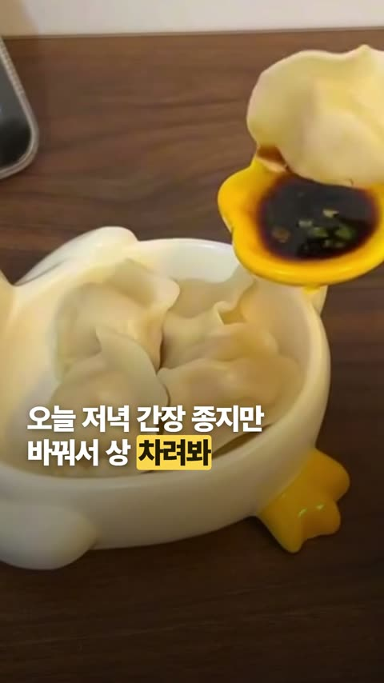
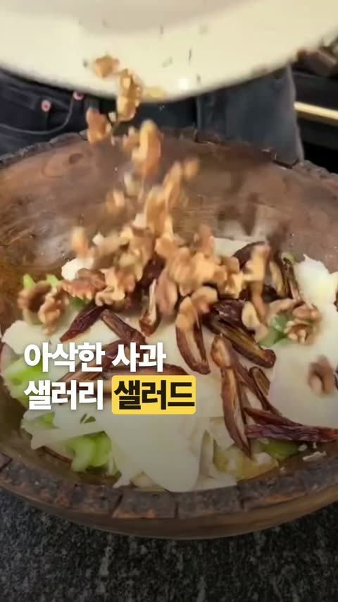
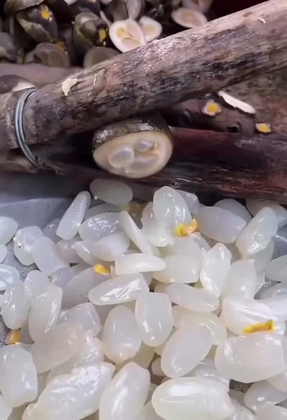

이 포스팅은 쿠팡 파트너스 활동의 일환으로, 이에 따른 일정액의 수수료를 제공받습니다.
중년 N잡러
@1mmm_1sss
영상에서 본 재료, 여기서 바로 찾으세요. 가장 최근 글이 맨 위에 있어요.



이 포스팅은 쿠팡 파트너스 활동의 일환으로, 이에 따른 일정액의 수수료를 제공받습니다.
@1mmm_1sss
영상에서 본 재료, 여기서 바로 찾으세요. 가장 최근 글이 맨 위에 있어요.


